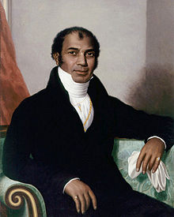
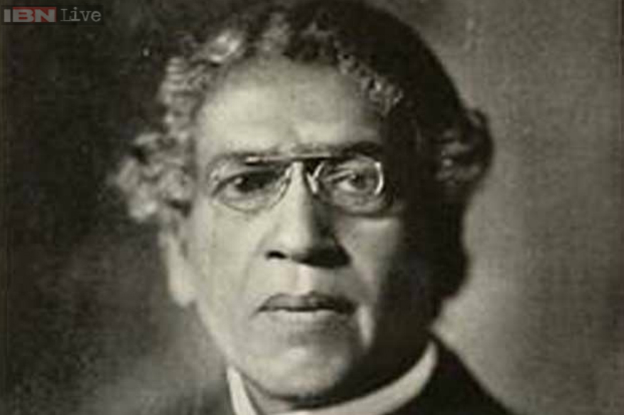

Ajay V. Bhatt

Ajay az USB kábel feltalálója
Sake Dean Mohamed

Bár a shampon feltalálója ismeretlen Sake Dean Mohamed mutatta meg elöször az angoloknak az Indiai találmányt ahol az gyorsan elterjedt
Sushruta Samhita
Sushruta Samhita volt az az orvos aki megtalálta a módját a szürkehályog műtésének
Salim Ali

Salim ali találta del a szisztematikus madárkutatást
Jagadish Chandra Bose

Jagadish Chandra Bose találta fel a Crescograph-t amivel a növények növekedését lehet nyomonkövetni